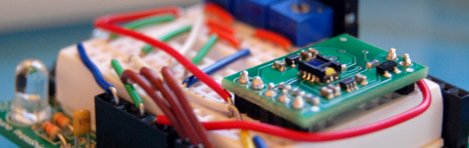

Sensing color with the ADJD-S371 + Arduino

About 2 years ago I picked up a ADJD-S371 color sensor from Sparkfun to work with my arduino. I spent a few days getting it to work, but finally got it going pretty well. I still get a few emails here and there asking for help with it. So I figured I would start bildr's tutorial posts off with this one.
Before we begin, I want to say that I could not have done this without the awesome help of Marcus over at Interactive Matter - Almost all of this code is of his hand, and he has gracefully released the code to bildr under the MIT license for users to build off of.
Im a huge fan of getting to the punch, it is what bildr is all about. So if you just want something to start with... here you go.
{kind=link}
//Configure gain here //Higher numbers = less sencitive // 0x00 through 0x0f int redGain = 0x03; int greenGain = 0x0; int blueGain = 0x0f; int clearGain = 0x01; //RGB LED pins //Digital PWM pins int redPin = 9; int greenPin = 10; int bluePin = 11; //Include the I2C Arduino library #include <Wire.h> //7 bit I2C address of this sensor #define I2C_ADDRESS 0x74 #define REG_CAP_RED 0x06 #define REG_CAP_GREEN 0x07 #define REG_CAP_BLUE 0x08 #define REG_CAP_CLEAR 0x09 #define REG_INT_RED_LO 0x0A #define REG_INT_RED_HI 0x0B #define REG_INT_GREEN_LO 0x0C #define REG_INT_GREEN_HI 0x0D #define REG_INT_BLUE_LO 0x0E #define REG_INT_BLUE_HI 0x0F #define REG_INT_CLEAR_LO 0x10 #define REG_INT_CLEAR_HI 0x11 #define REG_DATA_RED_LO 0x40 #define REG_DATA_RED_HI 0x41 #define REG_DATA_GREEN_LO 0x42 #define REG_DATA_GREEN_HI 0x43 #define REG_DATA_BLUE_LO 0x44 #define REG_DATA_BLUE_HI 0x45 #define REG_DATA_CLEAR_LO 0x46 #define REG_DATA_CLEAR_HI 0x47 float redFactor=1; float blueFactor=1; float greenFactor=1; //initial darkLevel; int calibrationDarkness = 0; byte calibrationRed = 5; byte calibrationGreen = 5; byte calibrationBlue = 5; void setup(void){ Serial.begin(9600); Wire.begin(); // sensor gain setting (Avago app note 5330) // CAPs are 4bit (higher value will result in lower output) set_register(REG_CAP_RED, redGain); set_register(REG_CAP_GREEN, greenGain); set_register(REG_CAP_BLUE, blueGain); set_register(REG_CAP_CLEAR, clearGain); int ledGain = getColorGain(); set_gain(REG_INT_RED_LO,ledGain); set_gain(REG_INT_GREEN_LO,ledGain); set_gain(REG_INT_BLUE_LO,ledGain); performMeasurement(); int red=get_readout(REG_DATA_RED_LO); int green=get_readout(REG_DATA_GREEN_LO); int blue=get_readout(REG_DATA_BLUE_LO); int m=2000; //bigger anyway m=min(m,red); m=min(m,green); m=min(m,blue); //Serial.print("m - "); //Serial.println(m); redFactor=((float)m*255.0)/(1000*(float)red); greenFactor=((float)m*255.0)/(1000*(float)green); blueFactor=((float)m*255.0)/(1000*(float)blue); } void loop() { int clearGain = getClearGain(); set_gain(REG_INT_CLEAR_LO,clearGain); int colorGain = getColorGain(); set_gain(REG_INT_RED_LO,colorGain); set_gain(REG_INT_GREEN_LO,colorGain); set_gain(REG_INT_BLUE_LO,colorGain); //reset the RGB (and clear) values int cc = 0; int red=0; int green=0; int blue=0; // Take 4 samples, and add them together. for (int i=0; i<4 ;i ++) { performMeasurement(); cc +=get_readout(REG_DATA_CLEAR_LO); red +=get_readout(REG_DATA_RED_LO); green +=get_readout(REG_DATA_GREEN_LO); blue +=get_readout(REG_DATA_BLUE_LO); } //now, divide the totals for each by 4 to get their average. cc/=4; red /=4; green /=4; blue /=4; //take the values mesured from above, and multiply them with the factors to //find out what value should be sent to the external RGB LED to reproduce this color float redValue = (float)red*redFactor; float greenValue = (float)green*greenFactor; float blueValue = (float)blue*blueFactor; Serial.print("red: "); Serial.print(redValue); Serial.print("green: "); Serial.print(greenValue); Serial.print("blue: "); Serial.print(blueValue); //send to LED analogWrite(redPin, map(redValue, 0, 1024, 0, 255)); analogWrite(greenPin, map(greenValue, 0, 1024, 0, 255)); analogWrite(bluePin, map(blueValue, 0, 1024, 0, 255)); //hold it for one second delay(1000); } int getClearGain() { int gainFound = 0; int upperBox=4096; int lowerBox = 0; int half; while (!gainFound) { half = ((upperBox-lowerBox)/2)+lowerBox; if (half == lowerBox) { //no further halfing possbile break; //no further halfing possbile } else { set_gain(REG_INT_CLEAR_LO,half); performMeasurement(); int halfValue = get_readout(REG_DATA_CLEAR_LO); if (halfValue > 1000) { upperBox=half; } else if (halfValue<1000) { lowerBox = half; } else { break; //no further halfing possbile } } } return half; } int getColorGain() { int gainFound = 0; int upperBox=4096; int lowerBox = 0; int half; while (!gainFound) { half = ((upperBox-lowerBox)/2)+lowerBox; if (half==lowerBox) { //no further halfing possbile break; // gain found } else { set_gain(REG_INT_RED_LO,half); set_gain(REG_INT_GREEN_LO,half); set_gain(REG_INT_BLUE_LO,half); performMeasurement(); int halfValue = 0; halfValue=max(halfValue,get_readout(REG_DATA_RED_LO)); halfValue=max(halfValue,get_readout(REG_DATA_GREEN_LO)); halfValue=max(halfValue,get_readout(REG_DATA_BLUE_LO)); if (halfValue>1000) { upperBox=half; } else if (halfValue<1000) { lowerBox=half; } else { break; // gain found } } } return half; } void performMeasurement() { set_register(0x00,0x01); // start sensing while(read_register(0x00) != 0) { // waiting for a result } } int get_readout(int readRegister) { return read_register(readRegister) + (read_register(readRegister+1)<<8); } void set_gain(int gainRegister, int gain) { if (gain <4096) { uint8_t hi = gain >> 8; uint8_t lo = gain; set_register(gainRegister, lo); set_register(gainRegister+1, hi); } } void set_register(unsigned char r, unsigned char v){ Wire.beginTransmission(I2C_ADDRESS); Wire.send(r); Wire.send(v); Wire.endTransmission(); } unsigned char read_register(unsigned char r){ unsigned char v; Wire.beginTransmission(I2C_ADDRESS); Wire.send(r); // register to read Wire.endTransmission(); Wire.requestFrom(I2C_ADDRESS, 1); // read a byte while(!Wire.available()) { // waiting } v = Wire.receive(); return v; }
If you are still with us and want to know more about getting the most from this guy, cool!
A few things you should know about the sensor before we dive in too deep: I have never been able to get perfect color sampling from this guy without limiting the colors it would detect to just 6, and accurately reproducing color on an LED is not as simple as one would hope. The color reading from the sensor could be spot on, but the reproduced color on the LED may be way off. Also, the sensor has gain settings for RGB, and white, these will need to be tweaked to get good results.
As you may know, the ADJD-S371 is an I2C component so you can't just read simple serial or analog values from it. Our arduino code uses the Wire.h library to communicate with it, making it a bit easier, but it is still hard to do, and I'm not going to go into detail of how any why it works here.
Mostly what you need to know about hooking up an I2C device to your arduino is that I2C is a 2-wire serial connection, SDA (Data) and SCL (clock) - On your arduino (everything but the mega) SDA is on analog input pin 4, and SCL is on analog pin 5. On an arduino mega, SDA is digital 20, and SCL is digital 21.
The ADJD-S371 has 4 sensors on it to detect Red, Green, Blue, and Clear. It reports back an individual reading from each sensor. The white, or clear, sensor is mainly for sensing brightness, but because the LED we will be using to reproduce the color is only an RGB LED, we are just going to disregard the white value.
It is not clear in any of the documentation, but I believe from looking at the schematic, and reading forums, that the onboard LED should be powered by 5v, not 3.3v. If this is wrong, please let me know, but the LED is too dim to work when powered at 3.3v.

Calibration
The above code and wiring diagram should work out of the box, but to get more accurate color readings from your sensor, you will need to tweak the gain for each color. If the sensor is too sensitive to red for instance, we will need to turn the gain down.
On this sensor, you assign each color channel a number of capacitors, the more the capacitors assigned to a color, the less sensitive it is. You can assign 0 - 16 capacitors, the values are assigned in hex so 0x00 through 0x0f. If you didn't know, 0x is placed in front of a number to note it is a hexadecimal number.
All the sensors will be a bit different from each other, but starting with 0x02 for all 4 colors and adjusting as needed should work well. If the sensor is reading too much red, raise the red gain. Too little blue? Lower the blue value, or raise all of the others.
//Configure gain here //Higher numbers = less sencitive // 0x00 through 0x0f int redGain = 0x02; int greenGain = 0x2; int blueGain = 0x02; int clearGain = 0x02;
Reproducing color on an RGB LED.
RGB LEDs are all the rage right now because you create many colors with them, but sadly, it is not always as simple as sending a color values to them and getting it back.
If you don't know, RGB LEDs are actually just 3 LEDs (red, green, blue) that share one lens, and have one of their 2 pins in common (so 4 pins, one for each color, and one common). This common pin is either the anode (positive), or the cathode (ground) of each LED. Personally I like common cathode because you connect one pin to ground, and you supply power to the other pins to power them. Mentally it makes more sense to me. If you have an common anode LED you tie the common pin to power, and you bring the other pins down towards ground to power them. Something about digitalWrite(ledPin, LOW) does not seem like I am turning it on. But just because I like them, does not mean you have to. In fact, many LED driver chips work exclusively with common anode LEDs, so know your application before you buy.

If you havnt ordered your RGB LEDs yet, go for common cathode diffused ones. Like these. The diffused lens helps blend the colors. With the clear lens LEDs you can really see each color lit up separately, and it it hard to see the blended color. I often place them in a paper tube to act as a defuser when all I have are the clear lens ones.
Different color LEDs require different voltage to power them, and an RGB LED is no different. Like I said, it is actually 3 LEDs in one, so the blue and green may max out at at 3.2v, the red may max out at 2.0v, so you can't even power them all the same. You need to check the doc sheet to know for sure.
To simplify things for myself, I always connect resistors to each of the 3 non common legs so I can power the red, blue and green with 5v.
Using these LEDs, all 3 colors have a current draw of 20ma. The blue and green are rated at 3.2v, and the red at 2.0v. So going over to the handy LED Calculator We find that a 100ohm resistor on both the green and blue pins, and a 150ohm resistor on the red pin will alow all 3 to operate at 5 volts (typical output on an arduino).
Using the resistors will allow us to use PWM pins on the arduino more easily because it will allow the full range of the PWM (0-255 or 0v-5v) without burning out one of the colors. If you down't want to use the resistors on the LED, you could change the range that the PWMs output in code. (NOTE: This will reduce the range and fidelity of the color reproduction.) For instance on the red channel, instead of outputting the full 0-255 range, you could limit it to 0-102 (102 would be 2v). Personally, the resistors make it easier because setting the PWM to 127 would be 50% power on the red, green, or blue LEDs. Here is an example of how you could skip the resistors and still keep some of the simplicity the resistors add.
Warning: Not using resistors with your LEDs puts them in harms way. One forgotten decimal point, or mistake here, and you could end up with a fried LED.
//function takes 0-100 to light up LED 0 to 100% int bluePin = 11; float blueVolts = 3.2; void writeBlue(int power){ float maxPower = (255/5) * blueVolts; int output = map(power, 0, 100, 0, maxPower); analogWrite(bluePin, output); } writeBlue(75); //blue LED at 75% power
So now that we know how to power one, you would think that you can easily just power the red at 100% turn off the blue, and the green to 50% and get orange (trust me, that is correct), but again because the LED has 3 distinct LEDs in it, each one has its own brightness as well, so that messes it up. Oh, and the brightness is probably not linear to power, the blue may fall in the less sensitive area of the eye (about 475nm) and the PWM may be doing this or that... Basically, you can get close-ish... But without a lot of work, your color representing will not be perfect.
One thing that may help. Lower the power sent to the LEDs so they are dimmer. The blending of the colors seems to work better when it is dimmer. Personally, I am happy if I put it on a red thing, and it glows red, im not looking for burnt umber vs rust
So I hope this helped you get going with this sensor even if it is not perfect.
bildr is communal know-how, so please, if you have any changes that would make this article better, please let us know.
Article taken from bildr.org with minor changes - I am the original author of this content